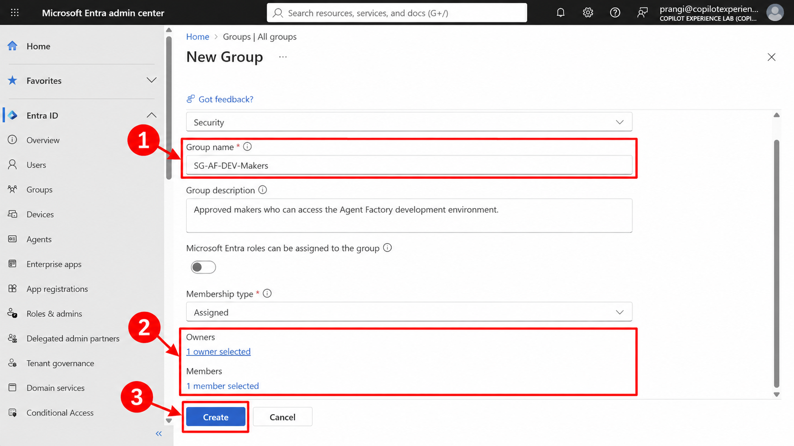
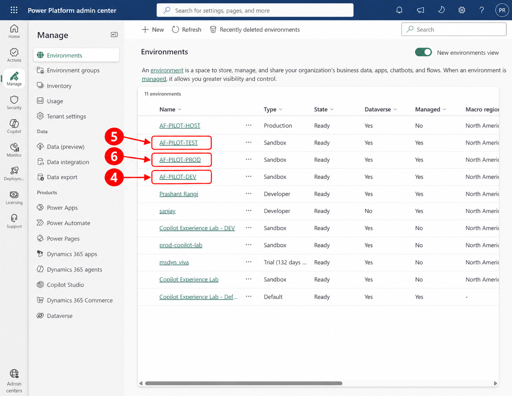
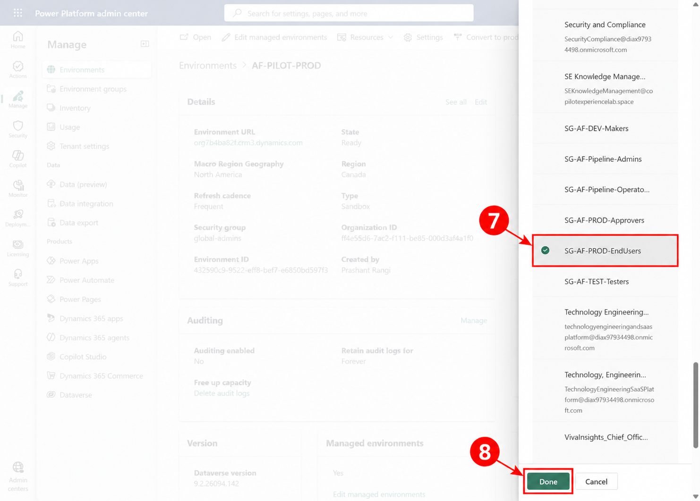
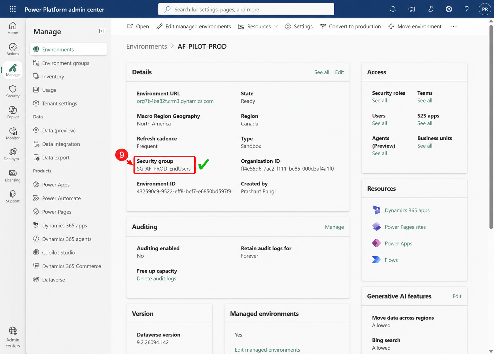

Prashant Rangi · 2026-10-15T09:09:15 · publish
Categories: Copilot Studio, Copilot Studio & Agent Factory
Tags: Access Control, Agent Factory, Agent Governance, Copilot Studio
An environment security group is a Microsoft Entra security group associated with a Power Platform environment. It defines the tenant users who are eligible to enter that environment. In an Agent Factory, this boundary prevents broad access from following agents across development, testing, and production and supports consistent separation of duties.
In Microsoft Entra admin center, create assigned-membership security groups for makers, testers, production end users, and production approvers. Add accountable owners and only the users who need that persona.

In Power Platform admin center, go to Manage > Environments. Open the development, test, and production environments one at a time. Use distinct groups so access cannot drift between lifecycle stages.

On the environment details page, select Edit, choose Edit security group, select the approved group, select Done, and then save the environment details. Repeat the same sequence for DEV and TEST with their corresponding groups.

The environment details now show the intended access boundary:

| Lab completion: The persona groups and DEV, TEST, and PROD environment boundaries are configured and validated for this Agent Factory lab. A production rollout should still use separate named personas and validate Dataverse roles, agent/app sharing, approval membership, and negative-access tests. |
Environment security groups provide the first identity boundary for a governed Agent Factory. Used with Dataverse roles, app sharing, pipeline teams, and approval controls, they create a scalable least-privilege model across the complete agent lifecycle.